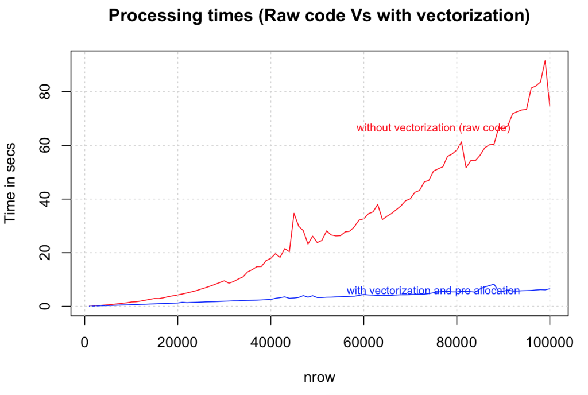
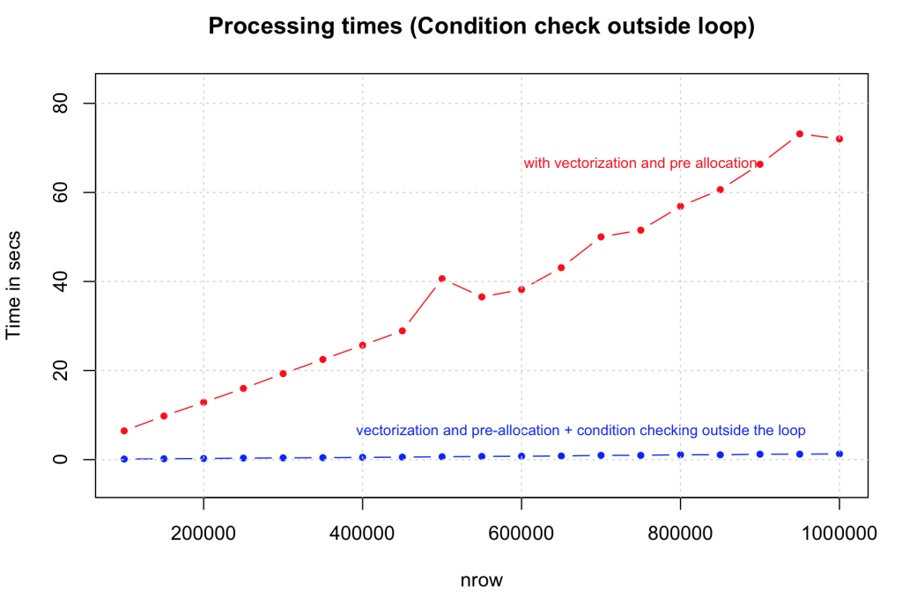
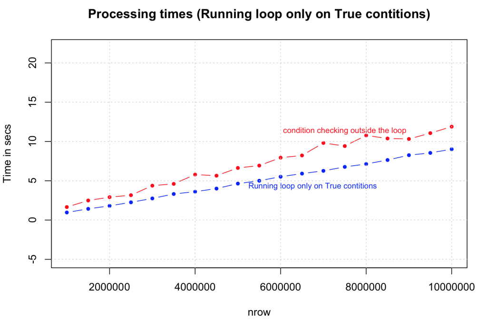
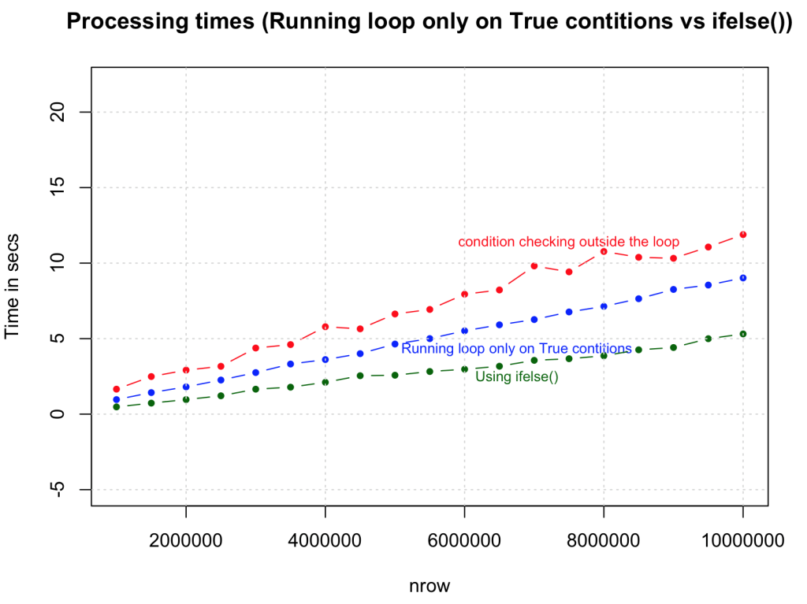
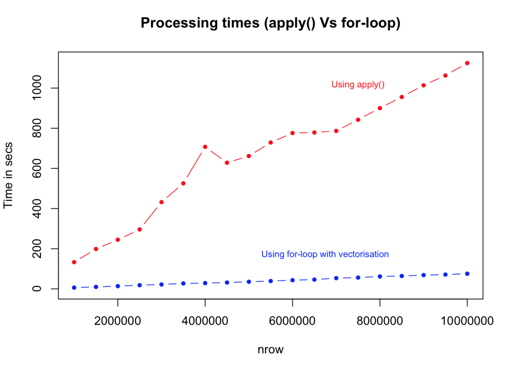
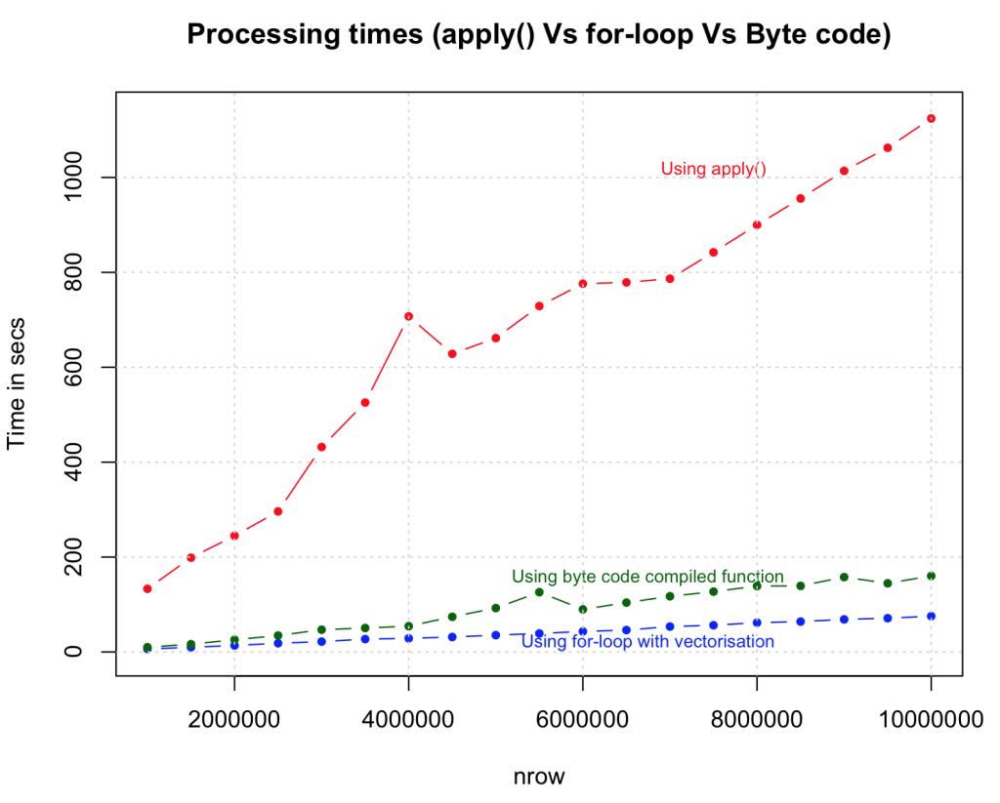
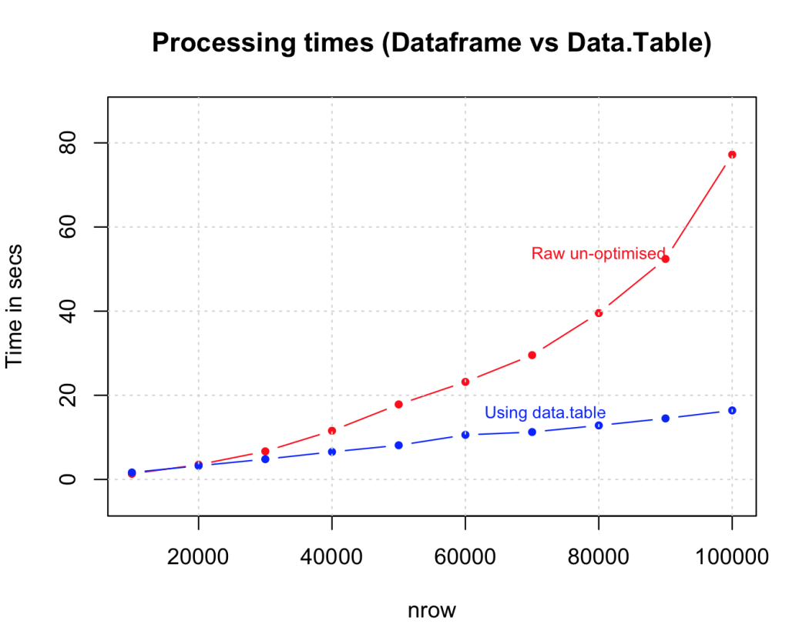

Strategies to Speed-up R Code
The for-loop in R, can be very slow in its raw un-optimized form, especially when dealing with larger data sets. There are a number of ways you can make your logics run fast, but you will be really surprised how fast you can actually go. This chapter shows a number of approaches including simple tweaks to logic design, parallel processing and Rcpp, increasing the speed by orders of several magnitudes, so you can comfortably process data as large as 100 Million rows and more.
Lets try to improve the speed of a logic that involves a for-loop and a condition checking statement (if-else) to create a column that gets appended to the input data frame (df). The code below creates that initial input data frame.
# Create the data frame
col1 <- runif (12^5, 0, 2)
col2 <- rnorm (12^5, 0, 2)
col3 <- rpois (12^5, 3)
col4 <- rchisq (12^5, 2)
df <- data.frame (col1, col2, col3, col4)
df
#> col1 col2 col3 col4
#> 1 0.6155322 -2.91525449 2 6.12523968
#> 2 0.5153450 -5.81655916 6 2.97873584
#> 3 1.1046449 0.80309503 2 0.07266261
#> 4 0.1127663 -1.48824042 3 2.39918101
#> 5 0.9370986 -1.35786823 0 7.38580513
#> 6 0.9675415 0.05832758 2 1.17428455The logic we are about to optimize:
For every row on this data frame df, check if the sum of all values is greater than 4. If it is, a new 5th variable gets the value greater_than_4, else, it gets lesser_than_4.
# Original R code: Before vectorization and pre-allocation
system.time({
for (i in 1:nrow(df)) { # for every row
if ((df[i, 'col1'] + df[i, 'col2'] + df[i, 'col3'] + df[i, 'col4']) > 4) { # check if > 4
df[i, 5] <- "greater_than_4" # assign 5th column
} else {
df[i, 5] <- "lesser_than_4" # assign 5th column
}
}
})
head(df)
#> col1 col2 col3 col4 V5
#> 1 0.6155322 -2.91525449 2 6.12523968 greater_than_4
#> 2 0.5153450 -5.81655916 6 2.97873584 lesser_than_4
#> 3 1.1046449 0.80309503 2 0.07266261 lesser_than_4
#> 4 0.1127663 -1.48824042 3 2.39918101 greater_than_4
#> 5 0.9370986 -1.35786823 0 7.38580513 greater_than_4
#> 6 0.9675415 0.05832758 2 1.17428455 greater_than_4All the approaches we see below re-creates the same logic but will do it more efficiently.
All the computations below, for processing times, were done on a MAC OS X with 2.6 Ghz processor and 8GB RAM.
1. Vectorize and Pre-allocate
Always initialize your data structures and output variable to required length and data type before taking it to loop for computations. Try not to incrementally increase the size of your data inside the loop. Lets compare how vectorization improves speed on a range of data sizes from 1000 to 100,000 rows.
# After vectorization and pre-allocation
output <- character (nrow(df)) # initialize output vector
system.time({
for (i in 1:nrow(df)) {
if ((df[i, 'col1'] + df[i, 'col2'] + df[i, 'col3'] + df[i, 'col4']) > 4) {
output[i] <- "greater_than_4" # assign to vector
} else {
output[i] <- "lesser_than_4"
}
}
df$output <- output # finally assign to data frame
})
2. Take statements that check for conditions (if statements) outside the loop
Taking the condition checking outside the loop the speed is compared against the previous version that had vectorization alone. The tests were done on dataset size range from 100,000 to 1,000,000 rows. The gain in speed is again dramatic.
# After vectorization and pre-allocation, taking the condition checking outside the loop.
output <- character (nrow(df))
condition <- (df$col1 + df$col2 + df$col3 + df$col4) > 4 # condition check outside the loop
system.time({
for (i in 1:nrow(df)) {
if (condition[i]) {
output[i] <- "greater_than_4"
} else {
output[i] <- "lesser_than_4"
}
}
df$output <- output
})
3. Run the loop only for True conditions
Another optimization we can do here is to run the loop only for condition cases that are ‘True’, by initializing (pre-allocating) the default value of output vector to that of ‘False’ state. The speed improvement here largely depends on the proportion of ‘True’ cases in your data. The tests compared the performance of this against the previous case (2) on data size ranging from 1,000,000 to 10,000,000 rows. Note that we have increase a ‘0’ here. As expected there is a consistent and considerable improvement.
output <- character(nrow(df))
condition <- (df$col1 + df$col2 + df$col3 + df$col4) > 4
system.time({
for (i in (1:nrow(df))[condition]) { # run loop only for true conditions
if (condition[i]) {
output[i] <- "greater_than_4"
} else {
output[i] <- "lesser_than_4"
}
}
df$output })
4. Use ifelse() whenever possible
You can make this logic much simpler and faster by using the ifelse() statement. The syntax is similar to the ‘if’ function in MS Excel, but the speed increase is phenomenal, especially considering that there is no vector pre-allocation here and the condition is checked in every case. Looks like this is going to be a highly preferred option to speed up simple loops.
system.time({
output <- ifelse ((df$col1 + df$col2 + df$col3 + df$col4) > 4, "greater_than_4", "lesser_than_4")
df$output <- output
})
5. Using which()
By using which() command to select the rows, we are able to achieve one-third the speed of Rcpp.
system.time({
want = which(rowSums(df) > 4)
output = rep("less than 4", times = nrow(df))
output[want] = "greater than 4"
})
# nrow = 3 Million rows (approx)
#> user system elapsed
#> 0.396 0.074 0.481 6. Use apply family of functions instead of for-loops.
Using apply() function to compute the same logic and comparing it against the vectorized for-loop. The results again is faster in order of magnitudes but slower than ifelse() and the version where condition checking was done outside the loop. This can be very useful, but you will need to be a bit crafty when handling complex logic.
# apply family
system.time({
myfunc <- function(x) {
if ((x['col1'] + x['col2'] + x['col3'] + x['col4']) > 4) {
"greater_than_4"
} else {
"lesser_than_4"
}
}
output <- apply(df[, c(1:4)], 1, FUN=myfunc) # apply 'myfunc' on every row
df$output <- output
})
7. Use byte code compilation for functions cmpfun() from compiler package, rather than the actual function itself.
This may not be the best example to illustrate the effectiveness of byte code compilation, as the time taken is marginally higher than the regular form. However, for more complex functions, byte-code compilation is known to perform faster. So you should definitely give it a shot.
# byte code compilation
library(compiler)
myFuncCmp <- cmpfun(myfunc)
system.time({
output <- apply(df[, c (1:4)], 1, FUN=myFuncCmp)
})
8. Use Rcpp
Lets turn this up a notch. So far we have gained speed and capacity by various strategies and found the most optimal one using the ifelse() statement. What if we add one more zero? Below we execute the same logic but with Rcpp, and with a data size is increased to 100 Million rows. We will compare the speed of Rcpp to the ifelse() method.
library(Rcpp)
sourceCpp("MyFunc.cpp")
system.time (output <- myFunc(df)) # see Rcpp function belowBelow is the same logic executed in C++ code using Rcpp package. Save the code below as “MyFunc.cpp” in your R session’s working directory (else you just have to sourceCpp from the full file path). Note: the // [[Rcpp::export]] comment is mandatory and has to be placed just before the function that you want to execute from R.
// Source for MyFunc.cpp
#include <Rcpp.h>
using namespace Rcpp;
// [[Rcpp::export]]
CharacterVector myFunc(DataFrame x) {
NumericVector col1 = as<NumericVector>(x["col1"]);
NumericVector col2 = as<NumericVector>(x["col2"]);
NumericVector col3 = as<NumericVector>(x["col3"]);
NumericVector col4 = as<NumericVector>(x["col4"]);
int n = col1.size();
CharacterVector out(n);
for (int i=0; i<n; i++) {
double tempOut = col1[i] + col2[i] + col3[i] + col4[i];
if (tempOut > 4){
out[i] = "greater_than_4";
} else {
out[i] = "lesser_than_4";
}
}
return out;
}
9. Use parallel processing if you have a multicore machine.
# parallel processing
library(foreach)
library(doSNOW)
cl <- makeCluster(4, type="SOCK") # for 4 cores machine
registerDoSNOW (cl)
condition <- (df$col1 + df$col2 + df$col3 + df$col4) > 4
# parallelization with vectorization
system.time({
output <- foreach(i = 1:nrow(df), .combine=c) %dopar% {
if (condition[i]) {
return("greater_than_4")
} else {
return("lesser_than_4")
}
}
})
df$output <- output10. Remove variables and flush memory as early as possible.
Remove objects rm() that are no longer needed, as early as possible in code, especially before going in to lengthy loop operations. Sometimes, flushing gc() at the end of each iteration with in the loops can help.
11. Use data structures that consume less memory
data.table() is an excellent example, as it reduces the memory overload which helps to speed up operations like merging data.
dt <- data.table(df) # create the data.table
system.time({
for (i in 1:nrow (dt)) {
if ((dt[i, col1] + dt[i, col2] + dt[i, col3] + dt[i, col4]) > 4) {
dt[i, col5:="greater_than_4"] # assign the output as 5th column
} else {
dt[i, col5:="lesser_than_4"] # assign the output as 5th column
}
}
})
Summary
| Method | Speed | nrow(df)/time_taken = n rows per second |
|---|---|---|
| Raw | 1X | 120000/140.15 = 856.2255 rows per second (normalized to 1) |
| Vectorized | 738X | 120000/0.19 = 631578.9 rows per second |
| True Conditions only | 1002X | 120000/0.14 = 857142.9 rows per second |
| ifelse | 1752X | 1200000/0.78 = 1500000 rows per second |
| which | 8806X | 2985984/0.396 = 7540364 rows per second |
| Rcpp | 13476X | 1200000/0.09 = 11538462 rows per second |
The numbers above are approximate and are based in arbitrary runs. The results are not calculated for data.table(), byte code compilation and parallelisation methods as they will vary on a case to case basis, depending upon how you apply it.